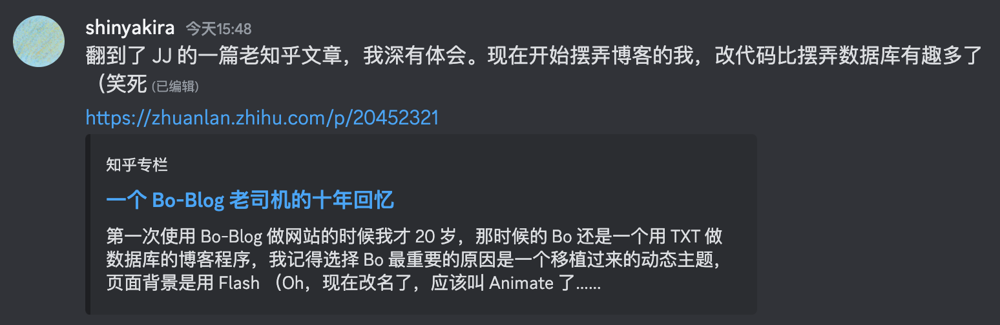

今天在「网上冲浪」的时候，刷到了这篇文章，里面提到了这样一段：
慢慢地，友情链接里那些朋友一个个都打不开了、RSS 不流行了、Google Reader 挂了、大家不说博客说自媒体了、就连 WordPress 也开始拥抱 JS 框架了，伴随着博客文化的兴衰，我一直默默地用着 Bo-Blog，想想也是习惯的力量，朋友们劝过我好多次切换到 WP，但我每次都淡淡回一句「我不高兴折腾数据库」，其实我很清楚，花在折腾 Bo 上的时间超过转换数据库百倍千倍不止，真的一直在用 Bo 其实是一种念旧吧，
虽然固执了一些，但是我依然乐在其中。JJ Ying - 一个 Bo-Blog 老司机的十年回忆
试着搭一个 Blog 是我很久很久以前的一个想法了，想试着有一个地方收集自己曾经写过的一些东西。因为「忘记」是很可怕的事情。
但是等到我真的实现了这个「梦想」的时候，
似乎确实，Blog 这东西随着时代的发展已经被彻底地抛到了后面。
现在这年头还想搞个 Blog 算是复古情怀了吧（笑
就如前面提到的那位朋友也停更了蛮长时间了捏（这是可以说的嘛（笑
不过我确实体会到了「折腾」的「醍醐味」。
在写今年《铃芽之旅》的影评的时候，我点开了今年的 OST 循环播放，希望将我自己代入到影片的节奏里。（对就这个 ↓）
听到了《すずめの涙》这首歌，让我若有所思。
首先，这首歌我很喜欢。是 RADWIMPS 的味道，是非电子洋次郎（bushi）
然后，这首歌其实玩了一个双关。
「すずめ」不仅是女主角 铃芽 的名字，同时也是「麻雀」的意思。
而「すずめの涙」这个歌名不仅表达了铃芽的泪滴，其实还是隐含了一个俗语。
「雀の涙」は「すずめのなみだ」と読み、「とても少ない量」「ごくわずかな量」を意味します。由来は鳥類の中でもかなり小型で私たちに馴染みのある雀からです。
「雀の涙」读作「Suzume no Namida」，意为「极少」或「微小」。
起源于麻雀，这种我们熟知的体型很小的鸟类。（本人渣翻）小学館 - 「雀の涙」とはどんな意味？
但是这不是这篇文章的重点。
为了记录这份我微不足道的观察，我希望把 Apple Music 界面嵌入博文中，同时希望也在 index 页面显示播放器。最开始，我通过直接修改 HTML 代码搞定了这个问题。但是转念一想，那不就说明以后每次更新推文的时候我都要去搞一次这个玩意？
懒如本人一定不能让这件事情发生！（笑）
于是我就开始了直接修改 hexo 框架和所用的 theme 的框架的打算。
于是就开始难倒了其实不是很会 ejs / css 的我。
但是很显然，既然下面那条 Babble 存在，这条 Babble 也被成功 Push 了出来，
那就说明我成功了~
然后其实每次 404 界面都是我自己添加到服务器里去的。这玩意我也是这次跟着一起自动的。之前也是纯自动，（单）纯（靠着）自（己手）动。（捂脸）
在此之前，其实这里的框架就已经被我半摸半索修改过好几次了。包括开始写 Blog 之后，我的 HTML 基础也算是经受了考验（再次捂脸）。虽然远谈不上「炉火纯青」，但是现在的我确实比几天前的我更加安心。
经过了这次之后，这个赛博空间或许会更加适合我了吧~
BTW
写 404 页面文案的时候，打算重操老本行之写打油诗。
不过英文押韵算是我第一次正式尝试，还好花的时间不长，算是一气呵成。
欢迎大家点一点玩一玩（?）：
https://shinyakira106.github.io/babble/404/
